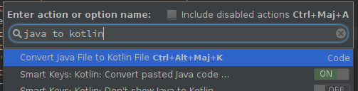

<img src="./img/kotlin_android_logo.png" height="180"> ### Kotlin, *better Java* Alan Herrera
### Sommaire * Introduction : Contexte, présentation, notions * 5 killer features * Parfait pour Android * Kotlin avec Android Studio * Résumé * Documentation et bibliographie
### Introduction
### Quels problèmes avec Java ? * Java manque de fonctionnalités modernes : * properties, programmation fonctionnelle poussée, surcharge d'opérateurs * Null safety * NullPointerException * Langage verbeux * Fonctionnalités spécifiques au JDK et à l’API Android
### Kotlin, c'est quoi ? * Nommé d’après une île de St-Petersburg * Un langage de programmation objet et fonctionnel : * Basé sur la JVM * Inspiré du livre *Effective Java* de Joshua Bloch * Plus compacte et moderne (« better java ») * Open source * Créé par JetBrains <aside class="notes"> - Intégré dans Android Studio et JetBrains Intellij<br> - Utilisé en interne par JetBrains </aside>
### Kotlin, c'est quoi ? * Un langage pour les gouverner tous : * Côté serveur (JVM) * Android (langage officielle Google I/O 2017) * Web : Kotlin Javascript * Embarquée/iOS : Kotlin/Native (*beta*)
### Kotlin, c'est quoi ? * La syntaxe en quelques mots : * Le type suit le nom de la variable/fonction * Une fonction commence par **fun** * Signature de classe -> constructeur par défaut * Le point-virgule est optionnel * Pas de mot clé **new** * val : immutable / var : mutable ```Kotlin class User(val name: String, val email : String): Person(name) { override fun foo(): Bar = Bar() } ```
### Notions de programmation fonctionnelle * Expression * Quelque chose qui s'évalue -> valeur typée * ex: 2 + 2; f(x, y²); f(f(f(f(f(x))))) * Instruction: * action qui change l'état de la mémoire * ex: x = 42; printf("Hello world !"); if (E) {I_1} else {I_2} * Lambda : fonction anonyme * { x: Int → x * x } * Higher-order function : retrourne une fonction/fonction en paramètre <aside class="notes"> Avantages programmation fonctionnelle: - concurrence<br> - !effets de bords -> cohérence du comportement (==fonction maths) </aside>
### 5 killer features
### Killer feature 1 : Programmation fonctionnelle ```Java //Java public List<String> doStuff(List<String> list) { ArrayList<String> result = new ArrayList<>(); for (str: list) { if (str.startsWith("a")) { result.add(str.toUpperCase()); } } return result; } ``` <!-- .element: class="fragment" data-fragment-index="1"--> ```Kotlin //Kotlin fun doStuff(list: List<String>) : List<String> { return list.filter( { str → str.startsWith("a") } .map( { str → str.toUpperCase() } ) } //encore plus concis fun doStuff(list: List<String>) = list.filter { it.startsWith("a") }.map { it.toUpperCase() } ``` <!-- .element: class="fragment" data-fragment-index="2"-->
### Killer feature 2 : Null Safety et Safe Calls ```Kotlin var bar: String = null //error: bar est non nullable var bar: String? = null //variable nullable fun foo(str: String?) { if (str == null) return bar = str.replace("a", "b") //check -> str non nullable bar = str?.replace("a", "b") //safe call bar = str?.replace("a", "b") ?: return //elvis operator str?.let { bar = it.replace("a", "b") } //let keyword bar = str!!.replace("a", "b") //attention ! } ```
### Killer feature 3 : Data Class *POJO coûteux !* ```Java public class User { private String name; private int age; public User(String name, int age) { this.name = name; this.age = age; } public String getName() { return name; } public void setName(String name) { this.name = name; } public int getAge() { return age; } public void setAge(int age) { this.age = age; } @Override public boolean equals(Object o) { if (this == o) return true; if (o == null || getClass() != o.getClass()) return false; User user = (User) o; return age == user.age && Objects.equals(name, user.name); } @Override public int hashCode() { return Objects.hash(name, age); } @Override public String toString() { return "name=" + name + " age=" + age; } } ```
```Kotlin //Un POJO en Kotlin data class User(val name: String, var age: Int) ``` ```Kotlin val alice = User("Alice", 42) alice.age = 43 println("${alice.name} is ${alice.age} years old") //Alice is 43 years old ``` * constructeur et properties par défaut * equals()/hashCode() * toString() -> "User(name=Alice, age=42)" * copy()
### Killer feature 4 : Extensions *Function extension* ```Kotlin fun String.encodeSpaces(): String = this.replace(" ", "_") println("Open Space".encodeSpaces()) //Open_Space ``` *Property extension* <!-- .element: class="fragment" data-fragment-index="1"--> ```Kotlin val Int.bd: BigDecimal get() = BigDecimal(this) val myBigDecimal = 42.bd //type BigDecimal ``` <!-- .element: class="fragment" data-fragment-index="1"-->
### Killer feature 5 : named and default parameter ```Kotlin data class User(val firstName: String = "", val name: String, val age: Int = 42, val email: String = "default@company.com", val height: Int, val weight: Int, val shoeSize: Int?) val Bob = User(name = "Bob", height = 180, weight = 70, shoeSize = 42) ```
### Parfait pour Android
### Parfait pour Android * Android est coincé avec Java 7~8 (min API 24) * Interopérabilité avec Java -> compatibilité des bibliothèques * Kotlin std-lib compact * Soutenu par JetBrains et Google
### Android Extensions * View binding comme *Butter Knife* * Pas de variables d'instance requises *build.gradle* ```Gradle apply plugin: 'kotlin-android-extensions' ``` *MainActivity* ```Kotlin import kotlinx.android.synthetic.main.activity_main.* override fun onCreate(savedInstanceState: Bundle?) { super.onCreate(savedInstanceState) setContentView(R.layout.activity_main) btn_go.setText(R.string.go) btn_go.setOnClickListener { txt_status.text = "Done" } } ```
### Android KTX Bibliothèque d'extensions de fonctions pour les API Android ```Kotlin sharedPreferences.edit() .putBoolean(key, value) .apply() //avec Android KTX sharedPreferences.edit { putBoolean(key, value) } ``` ###### [https://www.raywenderlich.com/5576-android-ktx-tutorial-getting-started](https://www.raywenderlich.com/5576-android-ktx-tutorial-getting-started)
### Performances * Compile vers du bytecode * Pas d'impact sur les performances * Du code Kotlin peut s'exécuter plus rapidement * Fonctions **inline** * Implémentations de la std-lib plus rapides que les implémentations DIY * Built time sensiblement identique * incremental builds
### Prêt pour la production Outils de tests : JUnit, MockK, Spek, KotlinTest Analyse de code : SonarKotlin plugin
### Kotlin avec Android Studio
### Les outils intégrés  * ou coller du code Java dans un fichier .kt * Installer le plugin EdutTools : cours Kotlin Koans
### Migrer vers Kotlin *build.gradle* ```Gradle buildscript { ... ext.kotlin_version = '1.3.0' } dependencies { ... classpath "org.jetbrains.kotlin:kotlin-gradle-plugin:$kotlin_version" } ``` *app/build.gradle* ```Gradle apply plugin: 'com.android.application' apply plugin: 'kotlin-android' dependencies { ... compile "org.jetbrains.kotlin:kotlin-stdlib:$kotlin_version" } ```
### Migrer vers Kotlin * Ecrire les tests en Kotlin * Convertir les POJO * Coder les nouveaux modules en Kotlin
### Résumé * *Code once, run everywhere* * concis, expressif, sûr -> relecture de code, bugs, qualité * Actif et prêt pour la production * Pas de *overhead* * Migration progressive * Adapté pour Android * Apprécié et adopté
### Bibliographie * Talks * Kotlin, the pragmatic language for Android : [mike.gouline.net/talks](https://mike.gouline.net/talks) * Google IO 2017 : [youtu.be/X1RVYt2QKQE](https://youtu.be/X1RVYt2QKQE) * Google IO 2018 : [youtu.be/6P20npkvcb8](https://youtu.be/6P20npkvcb8) * Documentation : [kotlinlang.org](https://kotlinlang.org/) * Article * 5 exciting features for Android Devs : [android.jlelse.eu/switching-from-java-to-kotlin-5-exciting-features-for-android-developers-49ce712a546](https://android.jlelse.eu/switching-from-java-to-kotlin-5-exciting-features-for-android-developers-49ce712a546)
Merci pour votre écoute !